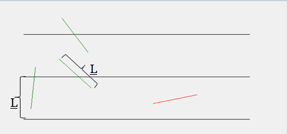
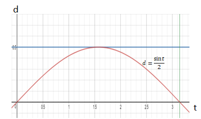

Aguja de Buffon
Planteamiento
En el siglo XVIII Georges Louis Leclerc, conde de Buffon, plantea el siguiente problema:
Empezamos con una hoja de papel con renglones dibujados a una distancia L entre ellos. Luego tomamos una aguja con también una longitud L y la lanzamos sobre el papel, dejando que caiga en un lugar aleatorio del papel y con una dirección aleatoria. El problema es, ¿cuál es la probabilidad de que la aguja corte uno de los renglones?
Por ejemplo, en la imagen siguiente vemos los renglones separados por una distancia L marcados con líneas negras horizontales. Luego, hemos lanzado de forma aleatoria cuatro agujas sobre el papel (cada una con una longitud L) y vemos que en este caso 3 de ellas cortan un renglón (las pintadas de verde) y la aguja pintada de rojo no cortó ningún renglón. Nos preguntamos, para cada una de las agujas, cuál es la probabilidad de que corte uno de los renglones.
El problema así descrito no parece muy sorprendente, pero lo increíble es el resultado que se obtiene. Resulta que la probabilidad de que una aguja corte una de las líneas es de 0.6366... !!! (es decir, un 63.66%). Mmmmm dicho así no resulta demasiado sorprendente, pero qué tal si les digo que esta probabildiad es exactamente igual a 2/π!!
Pero, ¿por qué aparece el número π en un problema que no parece tener nada que ver con círculos ni con nada comúnmente asociado a π? ¿Cuál es la conexión aquí?
Antes de responder esta pregunta, veremos que podemos usar este resultado para idear una forma interesante de calcular el número π, ¡que sólo requiere usar agujas, un papel y contar! Para ello, seguimos el siguiente procedimiento:
π = 2N / n
¡Lo que nos permite aproximar π usando sólo agujas!
Si no quieres perder tiempo lanzando agujas sobre un papel, tenemos preparado el siguiente programa interactivo que simula el lanzamiento de las agujas.
Puedes apretar los botones de abajo para lanzar distintas cantidades de agujas sobre los renglones horizontales dibujados. Al lanzar agujas sobre el papel, éstas se colorean de verde si la aguja corta uno de los renglones y sino se colorea de rojo. Luego, se cuenta el número N de agujas totales lanzadas y n de agujas que cortan un renglón. Y con estos dos números se calcula π usando la relación mencionada antes π = 2N / n. Intenta lanzar varias agujas y ve cómo la aproximación de π se va acercando al valor real conforme lanzas más agujas sobre el papel. Se presenta también el error porcentual de la aproximación con respecto al verdadero valor de π.
Vemos que este método funciona, ¡podemos aproximar π usando solamente agujas! Las aproximaciones al lanzar sólo unos cuantos miles de agujas suelen tener un error porcentual de menos del 1%, pero si pudiéramos lanzar millones de agujas, lograríamos aproximaciones de π mucho más exactas.
Explicación
Ahora justificaremos el procedimiento para aproximar π descrito en la sección anterior. Para ello, debemos de demostrar que la probabilidad de que una aguja lanzada aleatoriamente sobre la hoja es de 2/π como dijimos al principio.
Primero hay que traducir el problema a uno puramente matemático. Para ello, lo primero que notamos es que podemos describir la posición y dirección en la que cae una aguja usando 3 números, la coordenada x y la coordenada y en la que cae el centro de la aguja y el ángulo de la aguja respecto a la horizontal.
Necesitamos encontrar la relación entre estas 3 variables que indican que la aguja va a cortar o no uno de los renglones.
Para ello, utiliza la siguiente animación para variar la el valor de la coordenada x y de la coordenada y del centro de la aguja y para variar el ángulo y busca las condiciones que se requieren para que la aguja corte uno de los renglones.
Después de variar un poco la coordenada x, la coordenada y y el ángulo, podrás convencerte de lo siguiente:
Estas observacinoes nos permiten replantear un poco el problema. Primero, el punto 1 nos dice que podemos olvidarnos por completo de la coordenada x de la aguja, pues no es importante. Y el punto 3 nos dice que quizá convenga más definir una variable d que represente la distancia desde el centro de la aguja hasta el renglón más cercano. Esta variable d puede tomar cualquier valor entre 0 (si el centro de la aguja cae justo en un renglón) y 0.5 (si el centro de la aguja cae justo entre dos renglones) y es un mejor indicador para determinar si la aguja corta o no un renglón. Por último, el punto 2 nos dice que conviene restringir el valor del ángulo entre 0 y 180 grados.
Entonces, sólo hace falta considerar dos variables para saber si la aguja corta o no un renglón. La primera variable es la distancia d desde el centro de la aguja hasta el renglón más cercano y que puede tomar aleatoriamente cualquier valor entre 0 y 0.5. La segunda variable es el ángulo (que denotaremos por t) de la aguja respecto a la horizontal, que puede tomar aleatoriamente cualquier valor entre 0 y 180 grados.
Los valores de estas dos variables son lo único que se necesita para saber si la aguja corta o no un renglón. Ahora buscamos encontrar la condición que deben de cumplir las variables d y t para asegurar que la aguja corta un renglón.
Para ello, primero intenta variar los valores de d y t en la siguiente animación para encontrar la condición que se tiene que cumplir para que la aguja corte un renglón. En la animación agragamos una línea vertical desde la punta de la aguja hasta la posición vertical del centro de la aguja, que denotamos por h.
Después de jugar un poco con la animación, es fácil convencenrse que la aguja va a cortar el renglón si y sólo si la distancia h es mayor a la distancia d.
Entonces, lo único que nos falta es calcular la distancia h. Es fácil ver usando un poco de trigonometría y usando que la aguja tiene una longitud de 1, que la distancia h es de 1/2 * sin(t). Entonces, la condición de que h sea mayor a d se puede traducir a que 1/2*sin(t) > d.
Esto nos permite reescribir el problema original a un problema equivalente pero totalmente matemático.
Dado un número d elegido al azar entre 0 y 0.5 y un número t elegido al azar entre 0 y 180 grados (estas elecciones equivalen a lanzar aleatoriamente sobre el papel) nos preguntamos cuál es la probabilidad de que 1/2*sin(t) > d (esta condición equivale a que la aguja corte uno de los renglones).
Una vez que ya tenemos el problema replanteado matemáticamente, lo podemos resolver de una manera más sencilla.
Primero, vamos a medir el ángulo t en radianes, ya que es un
